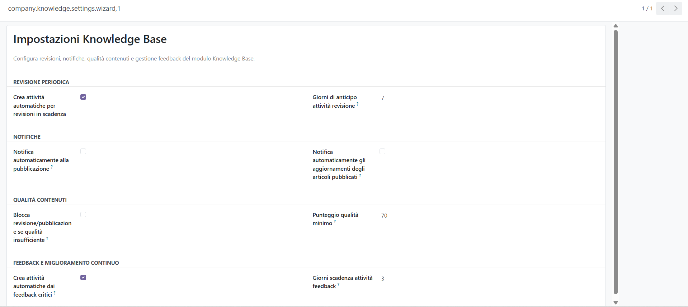
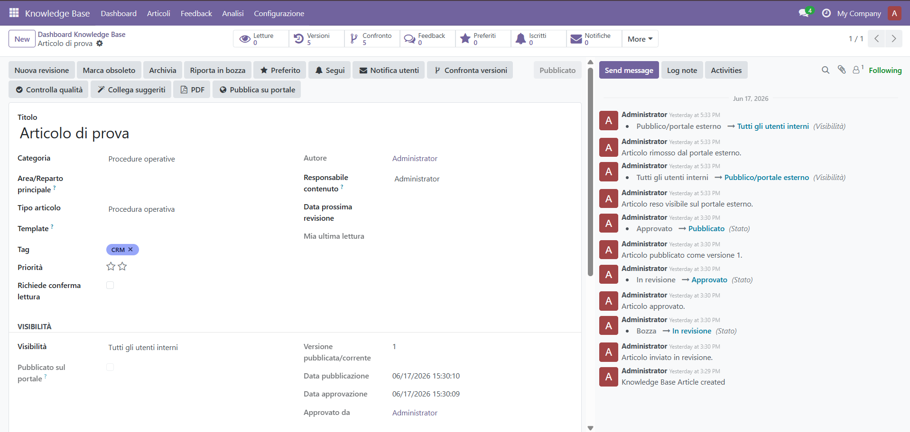
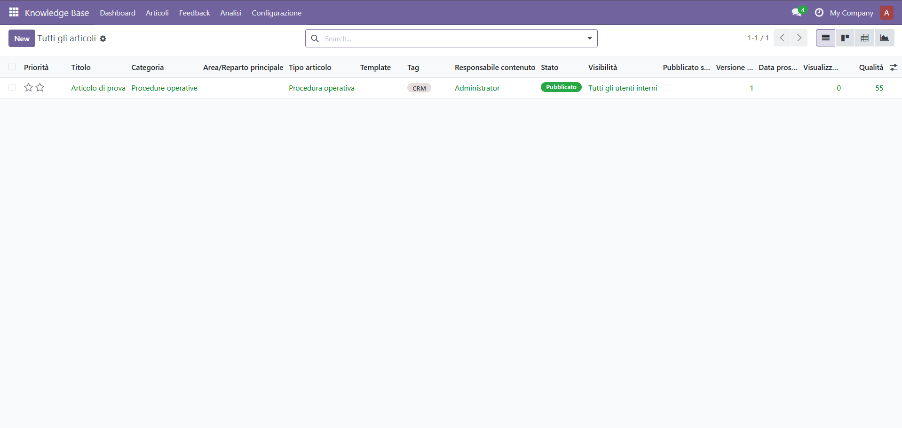

Company Knowledge Base Pro
Centralize company procedures, policies, FAQs and technical guides in Odoo with approval workflow, versioning, portal publishing, quality checks and a smart navigation dashboard.
What you can do
Manage company knowledge
Create structured articles with categories, tags, templates, attachments and rich HTML content.
Control approvals
Use draft, review, approval, publication, obsolete and archive states with workflow logs.
Track versions
Keep article versions, compare previous content and restore older versions when needed.
Improve content quality
Apply template-based quality rules, minimum score checks and quality dashboards.
Navigate faster
Use a smart dashboard with sidebar navigation, search, filters, sorting and visual metrics.
Publish externally
Publish selected articles to a public portal with controlled visibility and related articles.
Screenshots




Main features
- Knowledge articles, categories, subcategories and tags
- Article templates and quality rules
- Approval workflow with workflow history
- Version history, comparison and restore
- Favorites, reading history and reading acknowledgements
- Feedback, severity, activities and resolution tracking
- Attachments and article PDF reports
- Related articles and article suggestions
- Portal/public publishing
- Group, user and area based visibility
- CSV import and CSV/HTML/PDF export
- Dashboard with advanced search, filters and sorting
Built for Odoo 18 Community
Install the module, configure security groups, create categories and start building your internal knowledge hub.